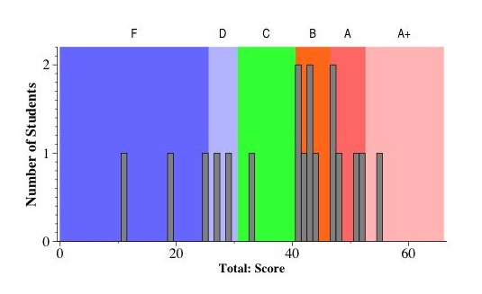

CS140 -- Final Exam: December 7, 2004
7 Questions. 66 Points.
Grades
I have to admit, given the fact that everyone left early, I
was a bit disappointed that the performance of the class as a whole
was not better, especially on the two coding questions, where you
could have taken as much time as you needed to make sure that the
details were correct. Regardless, if you are interested, please
read the answers.
Letter grades as follows:
- 53 and above: A+
- 47 to 53: A
- 41 to 47: B
- 31 to 41: C
- 26 to 31: D
- 0 to 26: F

Histograms of the scores on each question.